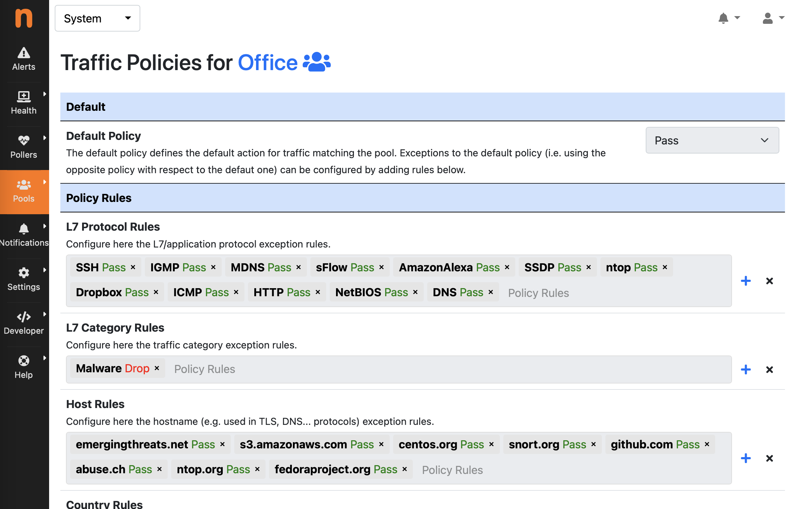

Using ntopng with nEdgeLite
ntopng can be used to enforce traffic policies when used in combination with nEdgeLite.
Note
A ntopng Pro or Enterprise license is required.
Traffic policies are automatically exported to nProbe after a change to the policies configuration, or when a new nProbe instance connects to ntopng via ZMQ. In order to publish policies to an additional ZMQ channel configure the ntopng ZMQ endpoint for IPS events. Example:
nedgelite -q 0 -z tcp://ntopng-host:5556 -p tcp://ntopng-host:5557
ntopng -i tcp://127.0.0.1:1234 --zmq-publish-events tcp://*:5557
Please refer to the nEdgeLite documentation for more details about the nEdgeLite configuration and ntopng integration.
A different traffic policy can be configured for each pool of hosts (see HostPools) by selecting the pool to edit, in the dropdown icon (‘Actions column’), click ‘Manage Pool’

The Host Pool Page
then on the “key” button in the Interface > Host/Network/MAC Pools page to edit the selected pool.

The Edit Host Pool Page
The policies configuration includes a default policy, that can be Pass or Drop (Default Deny), and more specific rules that can be used to configure exceptions with respect to the default policy, including:
L7 Application Protocol Rules
L7 Category Rules
Host Rules to configure hostnames used in TLS and DNS protocols for instance
Country Rules
Continent Rules
Risk Rules to apply policies based on the Flow Risk computed by nDPI

The Traffic Policies Page
An Auto Configure functionality is also available to automatically create a recommended configuration for the Traffic Policy by leveraging on the protocols/hosts seen by ntopng for the devices belonging to the Pool (please note ntopng should run for at least 1 day in order to get the best results). Please note that this configuration is a guess and should be manually fine tuned. This feature is particularly useful in case of devices which are supposed to use a limited/static set of services, which is the case of IoT devices for instance. In this case the Default Policy is set to Drop (Default Deny) and the Auto Configure functionality adds those L7 protocols and hostnames which are actually required for the device to work (according to the historical data). In order to populate Host Rules, the Top Visited Sites heuristic should be enabled under Settings > Preferences > Applications.

The Auto Configure Feature